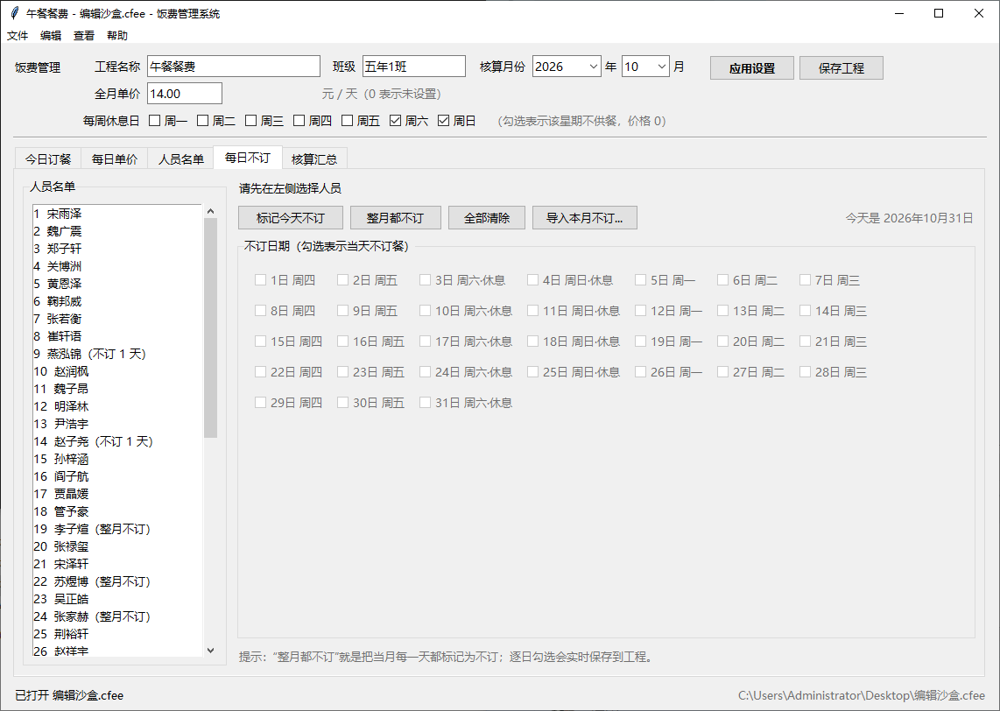
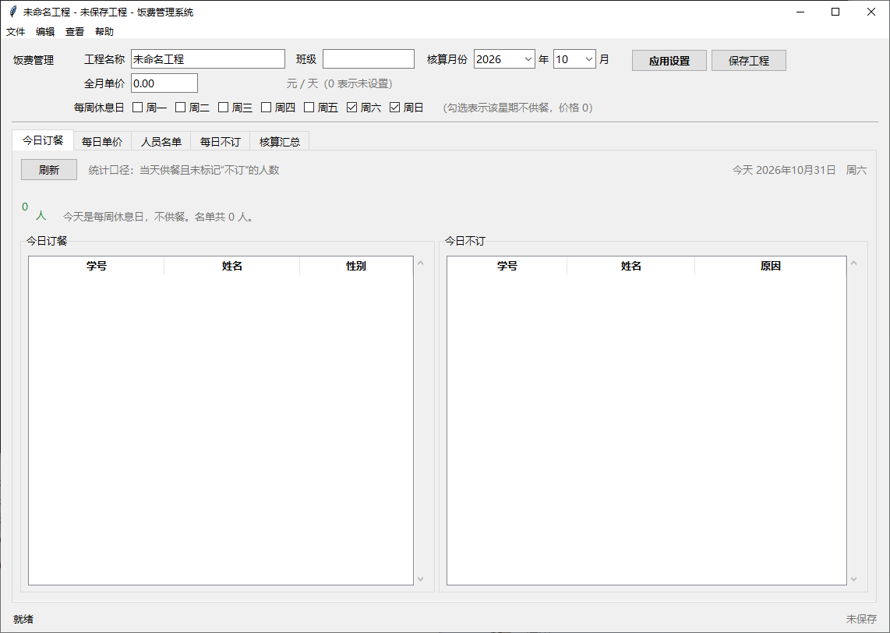

不再手工对表
Excel 名单导入后，每次不订、每个休息日、每天单独的价格都记在工程里。核算时按实际订餐天数自动加总，不用再翻聊天记录和表格。
OVERVIEW
每个月最麻烦的不是收钱，而是把“谁订了、谁没订、哪天没订”对上。FeeMan 把名单、日期和单价收进一个工程文件，月底直接出核算表。
Excel 名单导入后，每次不订、每个休息日、每天单独的价格都记在工程里。核算时按实际订餐天数自动加总，不用再翻聊天记录和表格。
今日订餐、每日不订、核算汇总三个页面互相对应。谁哪天没订、备注是什么、最后为什么是这个金额，都能顺着记录查回去。
FEATURES
从名单导入到核算表导出，围绕“一个月”这条线把常用动作做完整。
打开就是今天订餐人数、订餐与不订两份名单，以及今日单价和预计收入。休息日或不在工程月份时会明确提示。
自动识别「学号 / 姓名 / 身份证 / 性别」表头，也支持从文本直接粘贴。名单模板可以一键下载。
按日期勾选，支持“标记今天不订”和“整月都不订”。还可以粘贴一段格式不固定的通知，自动识别人名与餐别。
应缴金额 = 实际订餐天数 × 对应单价。支持每周休息日、单日加餐价，以及午餐 / 晚餐 / 周六餐的识别。
四列 Excel：班级 / 姓名 / 身份证号 / 费用，末行自动写合计公式。可选择导出时剔除 0 元人员。
.cfee 是 UTF-8 JSON，可保存、另存和迁移。身份证会校验 18 位校验码与出生日期，并自动推导性别。
WORKFLOW
先把基础信息建好，之后每天只需要记录变化，月底导出。
填好班级、核算年月、全月单价，勾选每周不供餐的星期。需要的话，再给某一天单独设价。
从 Excel / CSV 或文本导入人员。学号按自然排序，身份证不合法的记录会被跳过并提示。
每天勾选不订人员，或者直接粘贴通知文本。午餐、晚餐、周六餐都能识别，整月不订也会展开成逐日记录。
在核算汇总里检查天数和金额，导出四列 Excel。合计公式和班级列会自动填好，直接拿去对账。
PREVIEW
下面是 V1.0.0 在本机运行时截的图：从每日不订到今日订餐，界面和实际使用保持一致。


截图中的名单仅用于界面演示；实际界面以当前版本为准。
TECH
纯 Python + Tkinter，不依赖额外的界面库；数据处理用 openpyxl，工程文件是可直接打开的 JSON。
安装版使用 C++ 启动器 + 嵌入式 Python 运行时：首次启动自动下载运行时，之后可离线使用；也可以直接通过 uv 运行源码。
uv sync
uv run fee_app.pyTEAM
FeeMan 由 WZA 和 cxykevin 一起开发。从界面、数据到安装运行时，两个人一起把细节补齐，最后做成了一个可以真正拿去用的桌面工具。
源码、安装脚本和完整使用说明都在 GitHub 仓库里。也可以先来看看 cxykevin 的其他项目。